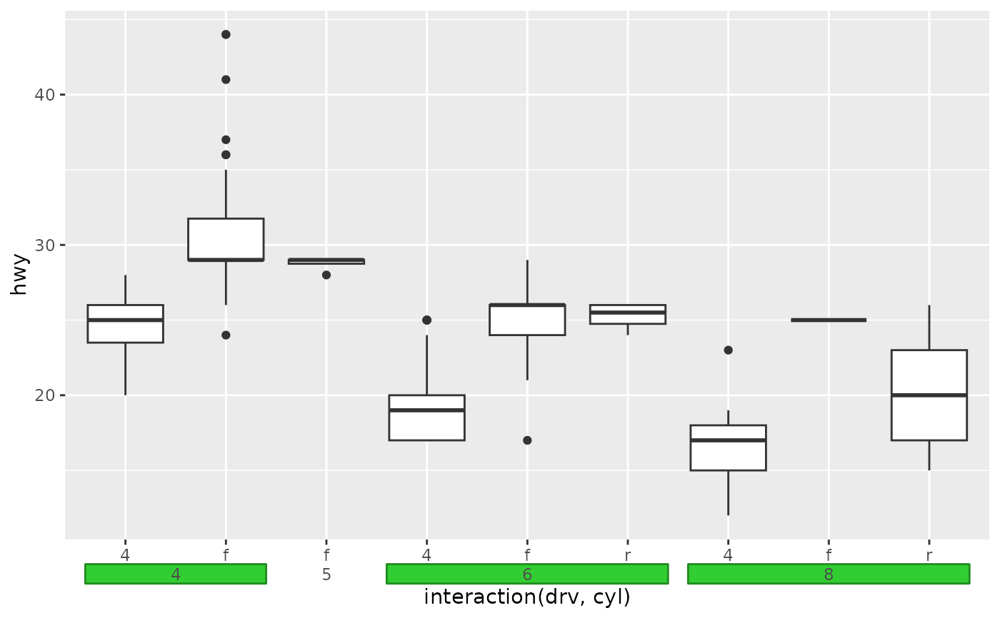
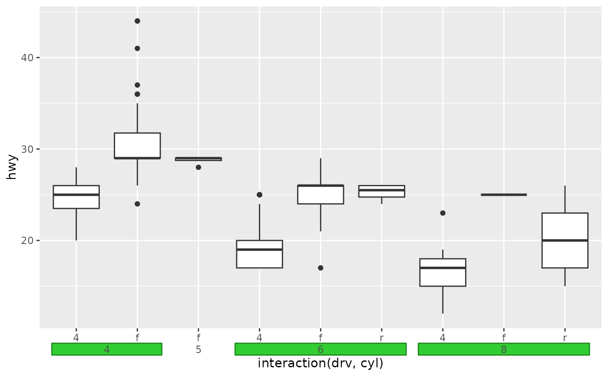

This axis guide gives extra range annotations to position scales. It can be used to infer nesting structure from labels or annotate ranges.
Arguments
- key
A range key specification. If not
key = "range_auto", additional labels will be inserted to represent point values.- regular_key
A standard key specification for the appearance of regular tick marks.
- type
Appearance of ranges, either
"box"to put text in boxes or"bracket"(default) to text brackets.- title
A
<character[1]>or<expression[1]>indicating the title of the guide. IfNULL, the title is not shown. The default,waiver(), takes the name of the scale object or the name specified inlabs()as the title.- theme
A
<theme>object to style the guide individually or differently from the plot's theme settings. Thethemeargument in the guide overrides and is combined with the plot's theme.- angle
A specification for the text angle. Compared to setting the
angleargument inelement_text(), this argument uses some heuristics to automatically pick thehjustandvjustthat you probably want. Can be one of the following:NULLto take angles and justification settings directly from the theme.waiver()to allow reasonable defaults in special cases.A
<numeric[1]>between -360 and 360 for the text angle in degrees.
- cap
A method to cap the axes. One of the following:
A
<character[1]>with one of the following:"none"to perform no capping."both"to cap the line at both ends at the most extreme breaks."upper"to cap the line at the upper extreme break."lower"to cap the line at the lower extreme break.
A
<logical>[1], whereTRUEis equivalent to"both"andFALSEis equivalent to"none"in the options above.A sorted
<numeric>[2n]with an even number of members. The lines will be drawn between every odd-even pair.A
<function>that takes the scale's breaks as the first argument, the scale's limits as the second argument and returns a<numeric>[2n]as described above.
- bidi
A
<logical[1]>: whether ticks should be drawn bidirectionally (TRUE) or in a single direction (FALSE, default).- oob
A method for dealing with out-of-bounds (oob) ranges. Can be one of
"squish","censor"or"none".- drop_zero
A
<logical[1]>whether to drop near-zero width ranges (TRUE, default) or preserve them (FALSE).- pad_discrete
A
<numeric[1]>giving the amount ranges should be extended when given as a discrete variable. This is applied after thedrop_zerosetting.- levels_text
A list of
<element_text>objects to customise how text appears at every level.- ...
Arguments passed on to
primitive_bracket()orprimitive_box().- order
A positive
<integer[1]>that specifies the order of this guide among multiple guides. This controls in which order guides are merged if there are multiple guides for the same position. If0(default), the order is determined by a hashing indicative settings of a guide.- position
A
<character[1]>giving the location of the guide. Can be one of"top","bottom","left"or"right".
Details
Under the hood, this guide is a stack composition of a line, ticks, optionally labels and either bracket or box primitives.
By default, the key = "range_auto" will incorporate the 0th
level labels inferred from the scale's labels. These labels will look like
regular labels.
To offer other keys the opportunity to display ranges alongside
regular-looking labels, the regular_key argument can be used to setup a
separate key for display in between the ticks and ranges.
See also
Other standalone guides:
guide_axis_custom(),
guide_colour_ring(),
guide_colourbar_custom(),
guide_coloursteps_custom(),
guide_subtitle()
Examples
# A plot with nested categories on the x-axis
p <- ggplot(mpg, aes(interaction(drv, cyl), hwy)) +
geom_boxplot()
p + guides(x = "axis_nested")
 # Apply styling to brackets
p + guides(x = "axis_nested") +
theme_guide(bracket = element_line("red", linewidth = 1))
# Apply styling to brackets
p + guides(x = "axis_nested") +
theme_guide(bracket = element_line("red", linewidth = 1))
 # Don't drop nesting indicators that have 0-width
p + guides(x = guide_axis_nested(drop_zero = FALSE))
# Don't drop nesting indicators that have 0-width
p + guides(x = guide_axis_nested(drop_zero = FALSE))
 # Change additional padding for discrete categories
p + guides(x = guide_axis_nested(pad_discrete = 0))
# Change additional padding for discrete categories
p + guides(x = guide_axis_nested(pad_discrete = 0))
 # Change bracket type
p + guides(x = guide_axis_nested(bracket = "curvy"))
# Use boxes instead of brackets + styling of boxes
p + guides(x = guide_axis_nested(type = "box")) +
theme_guide(box = element_rect("limegreen", "forestgreen"))

# Use as annotation of a typical axis
# `regular_key` controls display of typical axis
ggplot(mpg, aes(displ, hwy)) +
geom_point() +
guides(x = guide_axis_nested(
key = key_range_manual(start = 2:3, end = 5:6, name = c("First", "Second")),
regular_key = key_manual(c(2, 2.5, 3, 5, 7))
))
# Change bracket type
p + guides(x = guide_axis_nested(bracket = "curvy"))
# Use boxes instead of brackets + styling of boxes
p + guides(x = guide_axis_nested(type = "box")) +
theme_guide(box = element_rect("limegreen", "forestgreen"))

# Use as annotation of a typical axis
# `regular_key` controls display of typical axis
ggplot(mpg, aes(displ, hwy)) +
geom_point() +
guides(x = guide_axis_nested(
key = key_range_manual(start = 2:3, end = 5:6, name = c("First", "Second")),
regular_key = key_manual(c(2, 2.5, 3, 5, 7))
))